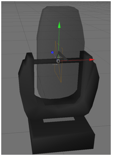

Rotation axes are marked with a square (consisting of two triangles). The name of this object must contain the appropriate parameter for the desired axis (e.g. _XAT) see Parameter.
All normals of this object have to point in the same direction.
During its import the object is converted into an axis. It is aligned along the direction of the normals (vertical on the square) positioned in the center of the square.
In case of movement the right-hand rule can be applied: Thumb shows into direction of normals, objects rotate into the direction of the fingers (with positive values).

The image shows the tilt axis of a moving head fixture. The normals of the square show to the left. The lens moves away from the viewer if the tilt axis is driven with values greater than 0°.